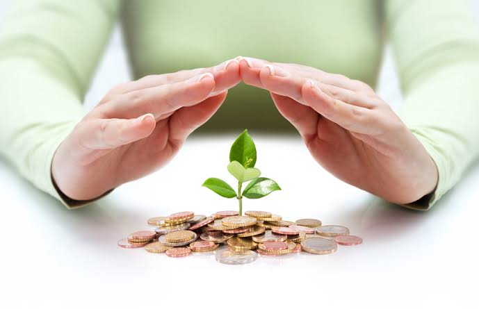

What is a Safe Investment?
2020.12.04 09:58
HOW TO INVEST STOCKS HELP Report a Bug! Home How to Invest
last updated 2017-08-28
What is a safe investment? What makes an investment safe? How do you choose a level of safety for your portfolio?
More Investing Articles
Investing During the Coronavirus Pandemic
How Does Social Distancing Affect the Economy?
What Does COVID-19 Mean for Stocks?
What is Cash Return on Invested Capital?
How Do Tariffs Affect the Stock Market?
Safety is often overlooked. Yet it's essential to good investing. The very nature of business makes safety a tricky quality to measure; it's multifaceted and unpredictable. Risk itself is only a measurement of expected and unexpected circumstances and the confidence you have that you understand them appropriately. You can truly account for everything only if you have complete knowledge (and if you have complete knowledge, you've already chosen the perfect stocks to buy).
Before you make any investment, you must gauge your appetite for risk and consider the safety or risk of that investment to your satisfaction. You must also understand this: a safe investment is one which protects your capital and preserves your ability to earn and to buy.
What is the Risk of Losing Your Principal?
Suppose you invest $1000 in a Canadian maple syrup company stock. What's the worst that could happen? It's a stock. There are no guarantees in business. If the company goes out of business, your stock could be worth nothing. In that worst case scenario, you would lose all $1000 of the principal you put into the stock.
What is the risk of losing more than the principal?
Suppose you short sell the stock. With these more complex investments, your exposure to risk is higher. You short 100 shares at $10 per share (gaining you $1000, less commissions) and it keeps going up to $100 a share, so you owe $10,000, losing you $9,000. Oops. You've lost the $1000 you thought you had and are liable for even more money, because the value of the underlying investment moved in a way you didn't expect.
Both cases (bankruptcy or an unfortunate short) are riskier than socking away your money in an FDIC -insured savings account in the United States (deposits guaranteed up to $250,000) or an investment in a US Treasury Bond , backed by the full faith and credit of the United States. Unless the United States collapses into anarchy where there's no money supply, no US dollar, and only rampaging hordes of raiders, the $1000 you put into a T-bill will be there.
That's still not 100% safety.
What is the Risk of Inflation?
A far more insidious risk is not earning enough on your investment to beat taxes and inflation. If you calculate a good annual rate of return , remember that the buying power of a dollar tends to go down over time ( average inflation of 2-3% annually as measured over decades ). Taxes will eat between 15-25% of your profits.
If you invest in a US Government Bond (no principal loss unless the government collapses) and make 1% interest (good luck with that) but inflation is 2%, you've effectively lost 1% of your buying power. That's a balloon with a slow leak.
That might be the right choice if keeping a lot of money safe is more important than keeping your buying power at the same level or expanding it but that depends on your investing goals. Investment safety may not be your top priority, you ignore it at your own peril.
What Makes an Investment Safe?
The risk of an investment depends on the stability of the entity which the investment represents. With a government bond, your risk is whether that government will continue to be a viable political entity. With a stock, your risk is whether the business will go bankrupt in whole or in part.
Your risk of losing buying power depends on the strength of the business entity (and the price you pay per share ).
You can't predict the future of any company, but understanding the underlying business and its financial structure will give you clues about companies which are valued fairly, overvalued, or undervalued. Even this basic information can help you choose wiser investments!
What are the Risk and Safety Categories of Stocks?
You can measure the relative safety of a stock by the size and longevity of the business it represents. A business in the Dow Jones Industrial Average is about as big and stable as a company gets. It's relatively safe for a stock. Similarly, a stock in the S&P 500 index represents one of the largest, most successful companies in the world today. It's not quite as impressive as a Dow stock, but it's big and stable.
As you go down the list of market capitalization and company size, you can find medium and small cap stocks worth investing in but without the history (sometimes) or market size to weather large economic storms. Of course, there's always an Enron or an AIG or a GM to get in trouble, but a well-managed company in a stable business can do a lot when it's larger than when it's smaller.
Finally, penny stocks are risky . You can't predict anything except that most of them historically are worthless so they're not safe at all.
Diversity may or may not help; the risk of compounding a loss of buying power is present in diversity, but the S&P 500 index fund is always worth considering . As far as stocks go, it's a safe investment. (Treasury bills are very safe investments in terms of preserving principal, but they won't earn you much return.)
Can Stock Investing Be Safe?
There are no 100% no risk safe stocks to invest in. Even a venerable Coca-Cola or Exxon may get in financial trouble, lose market share to a competitor, or find itself in a world where people don't want the liquids it sells. That's very, very unlikely (both are safe stocks), but it's possible .
There's no way to avoid risk altogether with any investment. The risk of losing your principal is ever present, but the risk of losing buying power from inflation, surreptitious fees , and taxes is insidious and subtle. Only when you measure both accurately can you truly judge the safety of an investment and the long-term fidelity of your investing goals.
← Why Do Companies Perform Stock Buybacks? | Is There a Secret Formula to Pick Good Stocks?
@trendshareOrg
facebook.com/Trendshare
© 2020 Big Blue Marble LLC
Investing carries risk . We do not guarantee the performance of any investment.
